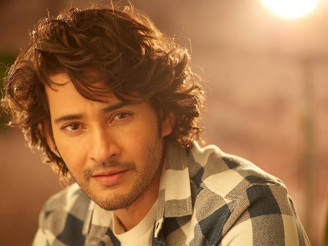
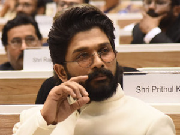
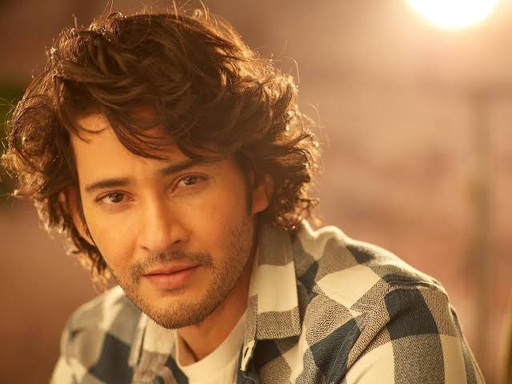
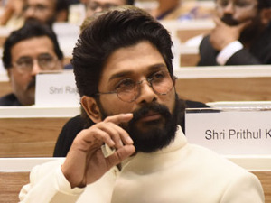

Pawan Kalyan Article Talk Read View source View history Tools Appearance hide Text Small Standard Large Width Standard Wide Color (beta) Automatic Light Dark Report an issue with dark mode Page semi-protected From Wikipedia, the free encyclopedia Pawan Kalyan Pawan Kalyan in June 2024 10th Deputy Chief Minister of Andhra Pradesh Incumbent Assumed office 12 June 2024 Governor S. Abdul Nazeer Chief Minister N. Chandrababu Naidu Preceded by Budi Mutyala Naidu Kottu Satyanarayana Rajanna Dora Peedika Amzath Basha Shaik Bepari K. Narayana Swamy Additional ministries[1] Member of the Andhra Pradesh Legislative Assembly Incumbent Assumed office 4 June 2024 Preceded by Dorababu Pendem Constituency Pithapuram President of the Jana Sena Party Incumbent Assumed office 14 September 2014 Preceded by Position established Personal details Born Konidala Kalyan Babu 2 September 1971 (age 52)[2] Bapatla, Andhra Pradesh, India Political party Jana Sena Party (2014–present) Other political affiliations Praja Rajyam Party (2008–2011) Spouses Nandini (m. 1997; div. 2007) Renu Desai (m. 2009; div. 2012) Anna Lezhneva (m. 2013) Children 4 Relatives See Allu–Konidela family Occupation actorpoliticianfilmmaker Konidala Pawan Kalyan[3] (born Konidala Kalyan Babu; 2 September 1971[2]) is an Indian politician and actor who has been serving as the 10th deputy chief minister of Andhra Pradesh since June 2024. He is also serving as the Minister of Panchayat Raj, Rural Development & Rural Water Supply; Environment, Forests, Science & Technology in the Government of Andhra Pradesh. He is the founder and president of the Jana Sena Party. As an actor, Kalyan primarily works in Telugu cinema and is known for his unique style and mannerisms. He has a huge fan base[4] and is one of the highest-paid actors of Indian cinema. He has been featured in Forbes India's Celebrity 100 list multiple times since 2013. Kalyan is the recipient of a Filmfare Award South and a SIIMA Award among other accolades.[8] Kalyan made his acting debut in the 1996 film Akkada Ammayi Ikkada Abbayi, but rose to prominence with the dramas Gokulamlo Seeta (1997) and Suswagatham (1998). He achieved stardom for his performance in Tholi Prema (1998), which won the National Film Award for Best Feature Film in Telugu that year. Kalyan established himself as a leading actor with successful projects such as Thammudu (1999), Badri (2000), Kushi (2001), Jalsa (2008), Gabbar Singh (2012), Attarintiki Daredi (2013), Gopala Gopala (2015), and Bheemla Nayak (2022). He received the Filmfare Award for Best Actor – Telugu for Gabbar Singh. Kushi and Attarintiki Daredi held the record of being the highest-grossing Telugu film of all time.[9] In addition to acting, he produces films under the banners Anjana Productions and Pawan Kalyan Creative Works. In 2008, Kalyan entered into politics as the youth wing president of his brother Chiranjeevi's Praja Rajyam Party, but he left after it merged into the Congress party. He founded the Jana Sena Party in March 2014. He is a black belt in Karate and trains in various martial arts which he depicts in his films regularly. Kalyan is referred to as Power Star by his fans and in the media. Kalyan is the founder of the charity Common Man Protection Force.[14] Early life and education Kalyan was born as Konidala Kalyan Babu[15] on 2 September 1971[2] in a Telugu family to Konidala Venkata Rao and Anjana Devi in Bapatla, Andhra Pradesh.[19][20] Venkata Rao worked as a police constable and was transferred on a regular basis. Kalyan was educated at the St. Joseph's High School in Nellore.[21] He was awarded the title "Pawan" during one of his public martial arts presentations.[22] He also holds a black belt in Karate.[23] Acting career Kalyan made his acting debut in 1996 with Akkada Ammayi Ikkada Abbayi. His second film Gokulamlo Seeta released the following year. He next appeared in A. Karunakaran-directed Tholi Prema (1999) which won the National Award and six Nandi Awards that year.[24] After Tholi Prema, Kalyan acted in Thammudu, playing the role of a kick boxer. Thammudu was released on 15 July 1999 and was written and directed by P. A. Arun Prasad. On 20 April 2000, he acted in Puri Jagannadh's first directorial venture, Badri. Produced by T. Trivikrama Rao and music composed by Ramana Gogula.[25] In 2001, he acted in the film Kushi. The film was released on 27 April 2001 and was directed by S. J. Suryah, which became a huge blockbuster that year.[26] In 2001, he was the brand ambassador for Pepsi at the time his brother Chiranjeevi was promoting Coca-Cola.[27] His next film Johnny, written and directed by himself, released on 26 April 2003. Kalyan also starred in the film, along with Renu Desai, produced by Allu Aravind, and music composed by Ramana Gogula.[28] In 2004, his film Gudumba Shankar was released. The film was directed by Veera Shankar and produced by Kalyan's brother Nagendra Babu under Anjana Productions banner. The film's script and screenplay were written by Kalyan and he also choreographed three songs in this film and action scenes were conceived and choreographed by him. In 2005, the film Balu, directed by A. Karunakaran was released. This was Karunakaran's second film with Kalyan after Tholi Prema. This film was produced by C. Ashwini Dutt under Vyjayanthi Movies banner.[29] In 2006, Bangaram, directed by Tamil director Dharani was released. During March 2006, Kalyan launched his second directorial venture Satyagrahi, produced by A. M. Rathnam, which would be a tale questioning the atrocities in society. After spending a few months on pre-production by signing with P. C. Sreeram and A. R. Rahman, the film was later suddenly shelved.[30] Later that year, he appeared in Annavaram, directed by Bhimaneni Srinivasa Rao. Asin, and Sandhya were cast alongside Kalyan in the film and the film was produced under Super Good Films. The film was released on 29 December 2006[31] and collected ₹23 crore (US$2.8 million) in 3 weeks and ₹30 crore (US$3.6 million) in 70 Days.[32][33] The film was a remake of the Tamil film Thirupaachi.[34] In 2008, Jalsa, directed by Trivikram Srinivas and produced by Allu Aravind was released on 2 April. This film got the highest first-day collection in Telugu film history and was also the first for any regional film in south India in a single state by that time.[35] Jalsa turned out to be the highest grosser of 2008 in Telugu cinema.[36] Puli was written and directed by S. J. Suryah and released in 2010. An official announcement was made in the same year that Kalyan was going to play a small role in a movie about Jesus Christ directed by Singeetam Srinivasa Rao.[37] In 2011, he appeared in Teen Maar, a remake of Love Aaj Kal, directed by Jayanth C. Paranjee.[38] He also appeared in Vishnuvardhan's gangster film Panjaa.[39][40] In 2012, he appeared in Gabbar Singh, a remake of Dabangg, directed by Harish Shankar.[41] The film successfully completed 100 days and stood as the second highest-grossing Telugu film at that time.[42][43][44] After this film, he worked in Puri Jagannadh's Cameraman Gangatho Rambabu.[45] In 2013, he appeared in Trivikram Srinivas's Attarintiki Daredi. The film, released on 27 September 2013, faced problems with piracy as half of the movie was leaked to the internet prior to its release.[46] In spite of this the movie was a blockbuster in 2013. The movie completed 100 days in 33 theaters and held the record of the highest-grossing film in Tollywood by that time, surpassing the previous record of Magadheera (2009).[47] Later, it was surpassed by Baahubali: The Beginning (2015).[48] In 2014, a Star India survey ranked Kalyan as one of the Top 5 Heroes of India.[49] In 2015, he appeared in Gopala Gopala, a Telugu remake of OMG – Oh My God!.[50] The film featured Kalyan starring alongside Venkatesh and was directed by Kishore Kumar Pardasani. In 2016, Kalyan's Sardaar Gabbar Singh, a sequel to his 2012 film Gabbar Singh received mixed-to-negative reviews from critics. Katamarayudu (2017), a remake of Tamil film Veeram marked his second collaboration with Kishore Kumar Pardasani. In 2018, he appeared in the film Agnyaathavaasi directed by Trivikram Srinivas. This marked Kalyan's 25th film.[51] In 2021, he made a comeback to films by appearing in Vakeel Saab, directed by Venu Sriram. He announced Hari Hara Veera Mallu, which is being directed by Krish Jagarlamudi. The shooting of the film has currently been on hold for almost 2 years, owing to Kalyan's political commitments. Mythri Movie Makers also announced Ustaad Bhagat Singh with Kalyan, under the direction of Harish Shankar.[52] He also acted in the remake of Vinodhaya Sitham, Bro, with Sai Dharam Tej, under the direction of Samuthirakani, who also directed the original film. Another film, OG, was subsequently announced with Sujeeth as the director and to be produced by D. V. V. Danayya.[53] Political career Kalyan with Narendra Modi, Prime Minister of India Praja Rajyam Party Kalyan started his political career in 2008[54] as the president of Yuvarajyam,[55] the youth wing of Praja Rajyam Party which was started by his elder brother Chiranjeevi. He neither contested in elections nor did he hold any constitutional post during his days in Praja Rajyam Party. While he actively campaigned for the party, he was also hit with few health problems. Kalyan was struck with bouts of vomiting, as he was hit by a sunstroke during a roadshow at Vizag on 19 April 2009.[56] Later, in 2011, when Chiranjeevi merged his party[57] with the Congress Party,[58] Kalyan took a break from political life, expressing his silent discontent with his brother's decision to merge the party.[59] Jana Sena Party Kalyan founded a political party named Jana Sena Party on 14 March 2014.[60][61][62] He wrote a book titled Ism which is also the ideology of the Jana Sena party.[63] He met with then Bharatiya Janata Party (BJP) Prime ministerial candidate Narendra Modi to discuss the issues related to both the Telugu states and extended his support.[64] He campaigned extensively for the Telugu Desam Party (TDP) and BJP alliance in Andhra Pradesh and Telangana. He opposed Congress party's rule stating the slogan Congress Hatao, Desh Bachao (lit. 'Stop Congress, Save the Country' in Hindi).[65] His rallies drew what the Deccan-Journal called "huge crowds" in Andhra Pradesh and Telangana.[66] In August 2017, he announced that he intended to enter full-time politics starting October 2017 once he completes his film commitments.[67] Kalyan brought the Uddanam kidney disease crisis to the attention of media and politicians through protests and a hunger strike. Government of Andhra Pradesh responded by constructing dialysis centers and implementing various schemes for the village.[68][69] In November 2016, Kalyan announced that Jana Sena will contest in the 2019 general elections in Andhra Pradesh.[70] He stated that he was planning to contest from all 175 legislatures of Andhra Pradesh without any alliance.[71] He opposed central government's move to privatise Dredging Corporation of India (DCI)[72] on a golden platter.[73] Kalyan led a protest march to condolence farmers who committed suicides or migrated from the drought-prone regions of Rayalaseema.[74] He opposed the TDP Government's decision on land pooling.[75] Kalyan conducted a march on the historical Dowleswaram Barrage in Rajahmundry demanding political accountability.[76] He exposed the alleged unchecked mining in the reserve forest area at Vanthada village of Prathipadu in East Godavari district.[77] Kalyan announced the Jana Sena party's 2019 election manifesto at Rajahmundry[78] public meeting with many measures to improve the lives of farmers,[79] farm labourers, women, youth, and students. His party would contest together with left parties[80] Communist Party of India, Communist Party of India (Marxist), and Bahujan Samaj Party[81] for the upcoming 2019 elections in both Telugu states of Andhra Pradesh and Telangana. At the same time, when he was actively campaigning for the elections all around Andhra Pradesh, he fell sick and shared a few health problems. As he was getting ready for his next round of campaign at Sattenapalle, he felt dizzy and nauseated. When the chopper was down for refilling at Gannavaram airport, he was down with vomiting, dehydration, and drowsiness. Immediately then, he was hospitalized and treated in Vijayawada. Again the campaign resumed after he got well.[82][83] Jana Sena Party contested in 140 constituencies in the 2019 Andhra Pradesh Legislative Assembly election, of which, Kalyan contested in two constituencies – Gajuwaka[84] and Bhimavaram.[85] He lost in both constituencies to candidates from YSR Congress Party.[86] His party was able to win from Razole, making it the only seat it won in the election.[87] Later the same year, on 3 November 2019, Kalyan led a long march in Visakhapatnam in support of construction workers, against YSR Congress Party, who have been facing unemployment due to a shortage of supply of sand in Andhra Pradesh.[88] On 16 January 2020, Kalyan announced his party's alliance with BJP, after three years of distancing from it.[89] On 12 February 2020, he led a rally for justice to Sugali Preethi, a 15-year-old girl who was raped and murdered, in Kurnool.[90] He demanded an inquiry by Central Bureau of Investigation (CBI) into the incident.[91] Jana Sena Party formed a triple alliance with Telugu Desam Party and BJP and contested in 21 constituencies in the 2024 Andhra Pradesh Legislative Assembly election, with Kalyan contesting in the Pithapuram constituency. He won by a margin of more than 70,000 votes; Jana Sena Party won in all the contested twenty-one assembly constituencies and two Lok Sabha seats.[92] On 12 June 2024, he was sworn in as a cabinet minister of Andhra Pradesh, whereas on 16 June 2024, he was announced as the deputy chief minister.[93] He is also serving as the Minister of Panchayat Raj & Rural Development; Rural Water Supply; Environment, Forests, Science & Technology in the Government of Andhra Pradesh.[94][95] Other works Brand endorsements In April 2001, soft-drink giant Pepsi, announced him as its brand ambassador, making him the first South Indian to endorse the popular soft-drink.[96] In January 2017, Kalyan agreed to take up the role of the brand ambassador for hand loom weavers in Andhra Pradesh and Telangana.[97] In August 2017, Kalyan was asked to be the brand ambassador to JEEVAN DAAN, an initiative started for organ donation by government of Andhra Pradesh.[98] Harvard University Kalyan was invited to Harvard University to deliver a speech in 14th edition of India Conference 2017 along with R. Madhavan.[99] Personal life Pawan Kalyan is the younger brother of actors Chiranjeevi and Nagendra Babu. He is also the uncle of actors Ram Charan, Allu Arjun, Varun Tej, Sai Dharam Tej, Vaisshnav Tej, and Niharika.[100][101][102] Kalyan married Nandini in 1997, one year after his film debut. In 2001, Kalyan started a live-in relationship with his co-star from Badri, Renu Desai; their son, Akira Nandan, was born in 2004.[103][104] In June 2007, Nandini filed a bigamy case on Kalyan alleging that he remarried without divorcing her; Kalyan responded by stating that he had not married Desai and a magistrate court in Visakhapatnam cleared him of the charge due to lack of evidence.[105] Subsequently, in July 2007, Kalyan filed for divorce at a family court in Visakhapatnam claiming that Nandini deserted him immediately after their marriage, which was denied by her lawyer. In August 2008, their divorce was formalized with an alimony of ₹5 crore paid by Kalyan as a one-time settlement.[106][107] In 2009, Kalyan married Desai after eight years of live-in companionship.[107] Their daughter Aadya was born in 2010.[108] The couple parted ways in 2012 with a formal divorce.[109] She later mentioned that they separated for personal reasons but she still maintains a very friendly relationship with Kalyan.[110] Kalyan met his third wife, Anna Lezhneva, a Russian citizen during the shoot of Teen Maar (2011).[103] They married in September 2013 under Special Marriage Act at a Sub-Registrar Office in Hyderabad.[104] The couple has a daughter Polena Anjana Pawanova and a son Mark Shankar Pawanovich.[111][112] Outside of work, Kalyan is a black belt in Karate who trains in various martial arts and is an avid reader.[113][114]

Ghattamaneni Mahesh Babu (born 9 August 1975) is an Indian actor, film producer, media personality, and philanthropist who works in Telugu cinema. He is one of the highest-paid actors in Indian cinema and has featured in Forbes India's Celebrity 100 list since 2012.[1][2] Referred to in the media as "Superstar",[3] he has appeared in more than 25 films. He is a recipient of several accolades including, nine Nandi Awards, five Filmfare Telugu Awards, four SIIMA Awards, three CineMAA Awards, and one IIFA Utsavam Award. He also owns the production house G. Mahesh Babu Entertainment[4] The younger son of veteran Telugu actor Krishna, Mahesh made his debut as a child artist in a cameo role in Needa (1979), at the age of four,[5] and acted in eight other films as a child artist. He made his debut as a lead actor with Rajakumarudu (1999) which won him the Nandi Award for Best Male Debut.[6] Mahesh achieved his breakthrough with the supernatural drama Murari (2001) and the action film Okkadu (2003), winning his first Filmfare Award for Best Actor – Telugu for his performance in the latter. He went on to star in other commercially successful films such as Arjun (2004), Athadu (2005), Pokiri (2006), Dookudu (2011), Businessman (2012), Seethamma Vakitlo Sirimalle Chettu (2013), Srimanthudu (2015), Bharat Ane Nenu (2018), Maharshi (2019), Sarileru Neekevvaru (2020), and Sarkaru Vaari Paata (2022), some of which rank among the highest-grossing Telugu films of all time. His performances in Pokiri, Dookudu, Seethamma Vakitlo Sirimalle Chettu, and Srimanthudu earned him high acclaim and four more Filmfare Awards for Best Actor - Telugu. Mahesh Babu is also a humanitarian and a philanthropist.[7] He established "Mahesh Babu Foundation", which focuses on supporting children in need by funding life-saving congenital heart surgeries. He is also associated with Rainbow Hospitals as their goodwill ambassador.[8] He entered into the film exhibition business in partnership with Asian Group in 2018, with the inauguration of the seven-screen multiplex, AMB cinemas at Gachibowli.[9] He is married to actress Namrata Shirodkar.[10] Early life and family Ghattamaneni Mahesh Babu was born on 9 August 1975 in a Telugu family to actor Krishna and Indira in Madras, Tamil Nadu, India.[11][12][13] He is the fourth of five siblings, after Ramesh Babu, Padmavathi, and Manjula and before Priyadarshini. His family hails from Burripalem in Guntur district, Andhra Pradesh.[14] Mahesh spent his childhood mostly in Madras under the care of his maternal grandmother Durgamma and the rest of his family.[15] He was educated at St. Bede's Anglo Indian Higher Secondary School. He went on to pursue Bachelor of Commerce degree from Loyola College, Chennai.[11][16] Acting career Early career and breakthrough (1979–2003) At the age of four, Babu visited the sets of the Telugu film Needa (1979) where its director Dasari Narayana Rao shot a few sequences of his as a part of the narrative in the presence of the former's brother Ramesh.[non-primary source needed] Needa marked his debut as a child actor.[citation needed] In 1983, he acted in Poratam (1983) upon being requested by its director Kodi Ramakrishna.[17] He went on to act as a child artist in the films Sankharavam (1987), Bazaar Rowdy (1988), Mugguru Kodukulu (1988) and Gudachari 117 (1989). He played a dual role in the film Koduku Diddina Kapuram (1989). Babu then appeared in Bala Chandrudu (1990), and Anna Thammudu (1990).[17][additional citation(s) needed] In 1999, Babu made his debut as a lead actor with the romantic comedy Rajakumarudu, and people began referring to him with the title Prince.[18] For his performance, he received the Nandi Award for Best Male Debut.[19] He starred in two films the following year – Yuvaraju and Vamsi.[citation needed] He also starred in Krishna Vamsi's Murari (2001) which he regarded as an important film in his career and the role he played in it one of his favourites.[20][failed verification][21] For his role in Murari, he earned a Nandi Special Jury Award, in addition to his first nomination for the Filmfare Award for Best Actor – Telugu.[19] In 2002, his performance in Takkari Donga landed him his second Nandi Special Jury Award.[19] He had two film releases in 2003, the first one being Gunasekhar's Okkadu co-starring Bhumika Chawla.[22] He won his first Filmfare Award for Best Actor – Telugu for his performance in the film.[23] The other release was Nijam co-starring Rakshita.[24] Babu received praise from critics for his performance in the film, with Vijayalaxmi of Rediff.com calling him the only reason to watch the film's second half which she termed "a routine tale of vendetta".[25] He won his first Nandi Award for Best Actor for his performance in the film, in addition to his third nomination for the Filmfare Award for Best Actor – Telugu.[26] Mainstream film (2004–2010) In 2004, Manjula produced his next film,[citation needed] Naani, directed by S. J. Surya co-starring Amisha Patel. While its simultaneously shot Tamil version New featuring a different cast proved to be commercially successful, Naani flopped at the box office.[20][non-primary source needed] He received his third Nandi Special Jury Award for his performance in his next film, Arjun, directed by Gunasekhar and produced by Ramesh.[27] The film released on 18 August 2004[28] and was successful at the box-office.[29] The film was screened at the International Film Festival of India in the mainstream section. This was Keerthi Reddy's final acting performance prior to her retirement from the film industry.[30] He chose to act in Trivikram Srinivas's Athadu (2005), co-starring Trisha Krishnan, whose script had been approved back in 2002 before the production of Naani and Arjun had begun.[31][non-primary source needed] It emerged as one of the highest-grossing films of the year.[32][33] The film proved to be a major boost for Babu's career as he received his fourth nomination for the Filmfare Award for Best Actor – Telugu, in addition to fetching his second Nandi Award for Best Actor for his performance in the role of a hired assassin.[34] The movie collected a share of ₹22 crores at the box office.[citation needed] Idlebrain.com gave it a rating of 3.25/5 and mentioned Mahesh Babu is stylish and brilliant as professional killer.[35]Cinegoer.net gave a review stating, "True the film gives an image of a Hollywood base for the drama. Even the taking, screenplay structure and execution of scenes, less talk and more action.[36] He then collaborated with Puri Jagannadh in 2006 for the film Pokiri, which was jointly produced by Jagannadh and Manjula.[37] He received high praise for his performance, with Y. Sunita Chowdary of The Hindu opining that "Mahesh's understated performance in Pokiri allows him effortlessly to reclaim the title of a star, overshadowing his questionable career choices of late".[37] He won his second Filmfare Award for Best Actor – Telugu for his performance in the film.[38] That same year, his next film, Sainikudu, was released.[39] A critic from Rediff.com wrote that "Nonetheless, Sainikudu can be watched at least for its premise of letting the warrior in each individual surface, and the fact that it is done with the idea of motivating people to do something for their fellow humans".[40] The following year saw Babu acting in the film Athidhi, co-starring Amrita Rao, marking her Telugu debut. The film was produced by Mahesh Babu's's brother Ramesh.[41] UTV Motion Pictures acquired the film's distribution rights for ₹18.5 crore, which became its first Telugu film venture.[42] Jeevi of Idlebrain.com praised the film's first half while criticising the last thirty minutes of the film.[43] A critic from Rediff.com wrote that the film "is built up through a 'racy' screenplay which is gripping to an extent, but stretches to three long hours".[44] In 2008, Babu provided voice-over for the film Jalsa directed by Trivikram Srinivas.[45] After Athidhi's release, Babu took a break from films for seven months; two months later, he signed Khaleja, but the break was unintentionally extended for two years due to several delays. During this time, Babu's grandmother and his wife Namrata's parents died. Krishna was worried about Babu's career as the film's shoot was delayed for so long.[46] The film deals with illegal-mining in India, and related environmental damage.[47] It marks Babu's return as an actor after a three-year hiatus in his second collaboration with Trivikram after Athadu. Upon release, Khaleja received mixed reviews from critics and was a commercial failure in India.[48] However, it managed to perform well at the overseas box office becoming the highest grossing Telugu film at that time.[49] Rediff gave a 3 out of 5 rating and noted "The duo of Mahesh-Trivikram delivers a product that is watchable, entertaining with good humour, couple of well-orchestrated action sequences and songs and with a bit to take home as well. It's Mahesh's show all the way, much to the delight of his fans. Mahesh is the soul of the movie, be it his dialogue delivery, his action, his dances or emotions, he is effortless.[50] The film is included in the list of "25 Greatest Telugu Films Of The Decade" by Film Companion.[51] Stardom and career setback (2011–2014) In 2011, Babu collaborated with Srinu Vaitla for the film Dookudualong with Samantha Ruth Prabhu.[52] For his performance in the film, Babu won his third Filmfare Award for Best Actor – Telugu, his third Nandi Award for Best Actor,[53] and his first SIIMA Award for Best Actor (Telugu).[54][55] After the film's gross crossed the ₹100 crore mark making it the highest-grossing Telugu film of that year. The Income Tax Department officials conducted a raid on Babu's Jubilee Hills residence as he was rumoured of receiving a remuneration of more than ₹12 crore for his next projects.[56] He later played the role of a mafia kingpin with a hidden personal agenda in the film Businessman (2012), co-starring Kajal Aggarwal.[57] Upon the film's release, he received praise from critics for his performance in the film, with Y. Sunita Chowdary of The Hindu writing, "The film has no frills, no vulgar wastage and the hero is practically in every frame; you hear only his voice, he looks good, sounds good, he also steals the comedian's job. Mahesh plays it straight".[58] He received his seventh nomination for the Filmfare Award for Best Actor – Telugu and his second nomination for the SIIMA Award for Best Actor (Telugu) for his performance in the film.[59][60] By then, Babu was reported to be the second highest-paid actor in South India after Rajinikanth.[61] Babu then began filming for Srikanth Addala's Seethamma Vakitlo Sirimalle Chettu (2013), whose script Babu had approved during the pre-production phase of Dookudu.[62] Co-starring Daggubati Venkatesh along with Anjali and Samantha Ruth Prabhu, it became the first Telugu multistarrer film to be produced in the last twenty-five years.[63] Released in January 2013, the film became one of the highest grossing Telugu films of the year and marked the completion of Babu's hat-trick of successful films.[64] Sangeetha Devi Dundoo of The Hindu called the film a "delightful family drama with its celebration of family bonds, love and marriage laced with laughter", and Addala "wants to leave his audience with a thought, wants them to reflect on their relationships and overlook skirmishes that can sour family bonds". Dundoo cited Guhan's cinematography as one of the film's highlights, and praised its performances.[65] He won his fourth Filmfare Award for Best Actor – Telugu and his second SIIMA Award for Best Actor (Telugu) for his performance in the film.[66][67] He provided a voice-over for Srinu Vaitla's Baadshah the same year.[68] Babu had two releases in 2014, the first one being Sukumar's 1: Nenokkadine, an action thriller focusing on a celebrity suffering from hallucinations related to the murder of his parents and the discovery of a special variety of rice.[69] Babu's performance received praise, with critics calling it one of his best performances.[70][71][72] For his performance, he received his fourth nomination for the SIIMA Award for Best Actor (Telugu).[73] Resurgence and recent work (2015–present) Babu collaborated with Koratala Siva for the action drama film Srimanthudu (2015) co-starring Shruti Haasan. He co-produced the film under his newly formed banner G. Mahesh Babu Entertainment Pvt. Ltd, marking his first film production venture.[74] He opted to do so to control the film's budget, accepting a share in profits in lieu of remuneration.[75] Released on 7 August 2015, Srimanthudu opened to positive reviews from critics,[76] and he won his fifth Filmfare Award for Best Actor – Telugu for the film.[77][78] Sethumadhavan N. of Bangalore Mirror stated, Srimanthudu wouldn't have been as effective if it did not have Mahesh Babu who is at his charming best, adding that he "underplays the emotional scenes, making them a treat to watch".[79] Babu also adopted his native village, Burripalem.[80] Babu won third SIIMA award for best actor for his performance in the film.[81] In 2016, he acted in the film Brahmotsavam co-starring Kajal Aggarwal, Samantha Ruth Prabhu and Pranitha Subhash. Originally produced as a bi-lingual, the film would've marked Babu's first straight-out Tamil film.[82] While the film underperformed at the box office, the Deccan Chronicle stated that Mahesh Babu was its saving grace.[83] Mahesh babu on the set of Brahmotsavam (film) He later appeared in the Telugu-Tamil bilingual Spyder (2017), directed by A. R. Murugadoss, which finally marked his Tamil cinema debut[84] and grossed over ₹118 crores at the box office.[85] The film received mixed reviews, with praise for the cast performances, but criticism for its writing, screenplay and direction.[86] Y. Sunita Chowdary of The Hindu stated that "Spyder starts off well but the director's imagination goes overboard only to turn a purpose ridden plot to a piece of travesty".[87] His next film was the political action drama Bharat Ane Nenu in 2018 where he played the role of a chief minister.[88] His performance in the film earned him his tenth nomination for the Filmfare Award for Best Actor – Telugu. His next film was Maharshi in 2019.[89] Hemanth Kumar of Firstpost mentioned the film owes a lot to Mahesh Babu's conviction to pull off his role and he makes you believe in his characterisation so much that it doesn't feel like fiction.[90] After the release of the film, the concept of weekend farming (also known as weekend agriculture) gained more attention.[91] A new internet challenge. i.e. Agriculture Challenge was started, with several people do farming in the weekends.[92] The Statesman reported that the film has created a social impact on the youth and raised awareness about the issues faced by farmers in the rural heartland.[93] In February 2020, Rajiv Gandhi University of Knowledge Technologies organised the contest "Campus Farming". 250 students of the university participated in this contest.[94] Babu performed in the 2020 film Sarileru Neekevvaru, earning him an eleventh nomination for the Filmfare Award for Best Actor – Telugu.[95] The satellite rights of the film were sold to Gemini TV,[96] which premiered it on 25 March 2020 for the first time on eve of Ugadi and in its first Television premier movie recorded a TRP of 23.4.[97] He next began filming for Sarkaru Vaari Paata, marking his maiden collaboration with director Parasuram in January 2021.[98] The film was released in May 2022 to mixed reviews from critics.Balakrishna Ganeshan of The News Minute gave the film a rating of 3/5 stars and wrote "It is great to see Mahesh Babu shedding his macho image and wooing a woman in the film. Mahesh is a delight to watch in these scenes. His comic timing and dialogue delivery are on point".[99] [100] Haricharan Pudipeddi of the Hindustan Times stated "Mahesh Babu offers something fresh in his latest film. If only Keerty Suresh could say the same.[101] In 2024, Babu reunited with Trivikram Srinivas for their third collaboration in the film Guntur Kaaram.[102] The movie received a mixed response from critics as well as the audience while Mahesh stole the show in the action drama. Philanthropy Mahesh Babu established, "Mahesh Babu Foundation", to improve the lives of underprivileged children and communities. The foundation primarily focuses on supporting children in need by funding life-saving congenital heart surgeries. The foundation also co-runs the charitable trust and non-profit organisation "Heal A Child" in collaboration with Andhra Hospitals and Rainbow Hospitals.[7] It also recognises the importance of education and provides scholarships to meritorious students from underprivileged backgrounds. Recognizing the need for holistic development, the Mahesh Babu Foundation adopted two villages, Burripalem in Andhra Pradesh and Siddhapuram in Telangana. In these villages, the foundation has undertaken various initiatives to improve the quality of life, including constructing schools, Anganwadi buildings, libraries, roads, and drainage systems. Additionally, they have established computer labs to equip villagers with crucial digital skills. The foundation also conducts regular medical checkups, distributes medicines to those in need, and has fully vaccinated the entire population of the adopted villages against COVID-19. Through health awareness programs, the foundation strives to empower villagers to make informed decisions about their well-being.[103] Babu has also supported AIG Hospitals' "End Corona Campaign", which was aimed at creating awareness about the COVID-19 vaccine.[104] It was one of the world's largest virtual awareness campaigns on the COVID-19 vaccine.[105] He was signed in 2013 as the goodwill ambassador of Heal-a-child Foundation, a non-profit organisation that offers financial support to the parents of terminally ill children to help with the cost of medical treatment.[106] Babu gives 30% of his annual income to charities, and most of his philanthropic activities are unpublicised because he prefers them to be so.[107] He joined Farhan Akhtar's Men Against Rape and Discrimination (MARD) campaign in August 2013 and lent his voice to the Telugu version of a poem written by Javed Akhtar.[108] In October 2014, he donated ₹25 lakh to a relief fund run by the chief minister of Andhra Pradesh for reconstruction of areas destroyed during Cyclone Hudhud.[109]
Allu Arjun (born 8 April 1982) is an Indian actor who works in Telugu cinema. One of the highest-paid actors in Indian cinema,[1] Allu Arjun has been featured in Forbes India's Celebrity 100 list since 2014.[2] He is a recipient of several awards including a National Film Award, six Filmfare Awards, and three Nandi Awards.[3] He is considered to be one of the finest dancers in Indian cinema.[4] He is popularly referred to as "Stylish Star" and "Icon Star".[5] Allu Arjun made his debut with Gangotri in 2003. He rose to prominence starring in Sukumar's cult classic Arya (2004) for which he earned a Nandi Special Jury Award.[6] He consolidated his reputation with the action films Bunny (2005) and Desamuduru (2007). In 2008, he starred in the romantic drama Parugu for which he won his first Filmfare Award for Best Actor – Telugu.[7] Allu Arjun went on to star in notable films such as Arya 2 (2009), Vedam (2010), Julayi (2012), Race Gurram (2014), S/O Satyamurthy (2015), Rudhramadevi (2015), Sarrainodu (2016), DJ: Duvvada Jagannadham (2017), Ala Vaikunthapurramuloo (2020) and Pushpa: The Rise (2021). His performances as a lower-class cable operator in Vedam and as a carefree street smart man in Race Gurram won him two Filmfare Awards for Best Actor – Telugu. He also won the Filmfare Award for Best Supporting Actor for his portrayal of prince Gona Ganna Reddy in Rudhramadevi. He received high acclaim for his performance in Pushpa: The Rise, which emerged as the highest-grossing Indian film in 2021 and ranks among the highest-grossing Telugu films of all time. The film also earned him his first National Film Award for Best Actor, and fourth Filmfare Award for Best Actor – Telugu. Allu Arjun endorses a wide number of brands and products, and is a celebrity brand ambassador for the Pro Kabaddi League[8] and for the streaming service Aha.[9][10] In 2021, Allu Arjun became the brand ambassador of Sri Chaitanya Educational Institutions.[11] Early life Allu Arjun was born on 8 April 1982[a] in a Telugu family to film producer Allu Aravind and Nirmala in Madras (present-day Chennai). His paternal grandfather was the noted film comedian Allu Ramalingaiah who appeared in over 1000 films.[15][16] Their native place is Palakollu of West Godavari district, Andhra Pradesh.[17] Allu Arjun grew up in Chennai before their family moved to Hyderabad in his 20s.[18][19] He is the second of three children. His elder brother Venkatesh is a businessman while his younger brother Sirish is also an actor. His paternal aunt is Surekha Konidela, the wife of actor Chiranjeevi.[20] He is the first cousin of actor Ram Charan.[21] Career Career beginnings (1985–1986; 2001–2007) After playing as a child artist in Vijetha (1985) and as a dancer in Daddy (2001), he made his adult debut in Gangotri.[22] The film was directed by K. Raghavendra Rao with his father Allu Aravind producing, along with C. Ashwini Dutt.[23] Praising his acting performance, Jeevi of Idlebrain criticised his looks in the film and added that "Arjun should choose roles that amplify his strength and nullify his weaknesses."[24] He then appeared in Sukumar's Arya.[25] He plays the eponymous lead, an outgoing and free-spirited boy falling in love with Geetha (Anu Mehta), an introverted girl who is on the shield of another person Ajay (Siva Balaji).[26] The film proved to be his breakthrough, earning a first nomination for the Filmfare Award for Best Actor – Telugu and won the Nandi Special Jury Award and the CineMAA Award for Best Actor (Critics).[27] The film was a critical and commercial success,[28] grossing over ₹30 crore,[29] with a production budget of ₹4 crore.[30] In 2006, the film was dubbed and released in Malayalam in Kerala. Owing to the film's success, he received major acclaim across the region and the Malayali people.[31] He next starred in V. V. Vinayak's Bunny playing the eponymous lead, a college student.[32] Being successful at the box office, critics praised his efforts, mannerisms and dancing.[33][34] His next film was A. Karunakaran's musical love story Happy.[35][36] The film did well at the box-office especially in the overseas markets.[37] A critic appreciated his dancing skills and performance, but felt that his character is a typical happy-go-lucky guy.[38] Experimentation of genres (2007–2010) He then starred in Puri Jagannadh's action film Desamuduru in which he played the role of Bala Govindam, a fearless journalist who falls for a woman with a darker past.[39] The film was a commercial success, fetching him a Santosham Film Award, a CineMAA Award and his second nomination for the Filmfare Award for Best Actor – Telugu.[40] The same year, he made his second cameo appearance alongside Chiranjeevi, in the song "Jagadeka Veerudiki" from the film Shankar Dada Zindabad. His next film was Bhaskar's Parugu, where he played the role of Krishna, a happy-go-lucky man from Hyderabad who helps his friend to elope with his love, only to experience the wrath of the woman's father and the emotional struggle he felt. Idlebrain wrote: "Allu Arjun is pretty excellent in the first half as the characterization in the first half is vibrant and needs loads of energy. He carried the entire first half on his shoulders. He excelled in the emotional scenes in the second half."[41] Writing for Rediff.com, Radhikha Rajamani stated that "Arjun performs well though he is rather subdued."[42] Allu Arjun won his first Filmfare Award for Best Actor – Telugu and his second Nandi Special Jury Award. Allu Arjun next starred in Sukumar's action comedy Arya 2. A spiritual sequel to the romantic action film Arya (2004), he played the role of Arya, an orphan who is behaviourally sick in that he is consumed with possessiveness for his friend Ajay (Navdeep), who never accepts him. The film revolved around the complexities of love–hate relationships and love triangles.[43] His character in the film had shades of grey.[44] Sify wrote that "Allu Arjun is full of energy as the guy caught in the powerful current of love. Though he plays the part with negative shades, his characterization could evoke a lot of sympathy from the audiences. His dances are mind-blowing and he excels in emotional scenes."[45] Oneindia appreciated his dance moves and acting performances, especially the comedy scenes.[46] He received his fourth nomination for the Filmfare Award for Best Actor – Telugu for his performance in the film. He had two releases in 2010. The first was Gunasekhar's Varudu, in which he starred alongside Arya and Bhanu Sri Mehra.[47] The filmreceived mixed reviews from critics and was a box-office bomb.[48][49] His second release of the year was the highly acclaimed hyperlink anthology film Vedam. It was his first A-rated film in India, and the story takes an inspiration from 26/11 Mumbai blasts in Taj Mahal Palace Hotel, Mumbai.[50] He played the role of Anand "Cable" Raju, a cable operator hailing from Jubilee Hills (Hyderabad) slum. The film also features Anushka Shetty, Manchu Manoj and Manoj Bajpayee in other prominent roles.[51] His performance received appreciation from film critics,[52] with The Times of India calling it "scintillating"[53] and Idlebrain.com calling it as "best in his career".[54] A critic also commented that "He's a good dancer and does justice to his role."[55] Another critic wrote that "Allu Arjun is excellent as the groom who goes all out to get his bride back. His mass dialogues are good in the second half."[56] He achieved his second Filmfare Award for Best Actor – Telugu for the performance in the film. Further success (2011–2013) He next appeared in V. V. Vinayak's action film Badrinath (2011), in which he played the role of Badri, a modern-day Indian samurai who is assigned to protect the Badrinath Temple by his Guru (Prakash Raj), to whom he is very loyal.[57] Allu Arjun undertook intensive martial arts and sword fighting training in Vietnam[58][59] and marks his first pairing with Tamannaah.[60] He grew his hair out for his look as a warrior in the film.[citation needed] It his second A-rated film in India after Vedam (2010), on the account of graphic action violence.[61] The film completed a 50-day run in 187 cinemas.[62] His performance and character received mixed reviews.[63][64] A critic of The Times of India wrote that "Arjun hardly has any scope to emote as he was mostly pushed into action scenes and song sequences."[65] After Badrinath, he signed Trivikram Srinivas's action comedy film Julayi in 2011.[66] It was released in 2012, in which he played the role of Ravindra Narayan, a street-smart yet spoilt brat whose life takes a drastic turn after he becomes the witness of a huge bank robbery. A critic wrote that "Allu Arjun puts in a confident performance as the loveable rogue. It's a role that is right up his alley and he carries it off with a characteristic panache. He lights up the screen with his dancing in particular, pulling off some pretty challenging dance moves."[67] Riya Chakravarty of NDTV, in her review, stated that "Arjun has delivered an outstanding performance."[68] He was nominated for the SIIMA Award for Best Actor – Telugu, for his performance in the film. The next year, he starred in Puri Jagannadh's action thriller Iddarammayilatho, playing Sanju Reddy, a guitarist with a dark past, alongside Amala Paul and Catherine Tresa. Sangeetha Devi Dundoo of The Hindu praised his performance in the action sequences and dance moves in various songs in the film, adding "Allu Arjun uses his agility to his advantage in dances and stunt episodes".[69] Another critic wrote that "True to his tag of "stylish star", Allu Arjun looks trendier than ever before. His character of a guitarist, who is a street performer in Barcelona, was at its best sketchy, and looks completely different from his previous films. He once again proves that he is a good actor and probably because of the action director's meticulous planning, he makes perfect expressions in all the fight scenes."[70][71] The film marks his second and last collaboration, with Puri Jagannadh after Desamuduru (2007). Commercial success (2014–2018) In 2014, he appeared in a cameo role in Vamsi Paidipally's action thriller film Yevadu, alongside Kajal Aggarwal.[72][73] Y. Sunita Chowdary of The Hindu, in her review, wrote that "Allu Arjun shows what an actor can do even in a short role, in the few minutes he packs his experience, internalises the character and makes an impressive exit even as he loses his identity."[74] His next film was Surender Reddy's Race Gurram, in which he played Allu Lakshman "Lucky" Prasad, a carefree guy.[75] He joined the production of the film in May 2013.[76] The film was successful at the box office, with the film being Allu's first ₹100 crore grosser.[77] Writing to Deccan Chronicle, Suresh Kavirayani felt that Allu Arjun steals the show with his energetic performance and also praised his dancing skills in the film.[78] Ranjani Rajendra too praised his dance moves, comic acting and performance in the action sequences, but felt that the story is predictable and routine.[79] For his performance, he won his third Filmfare Award for Best Actor – Telugu[80] and was nominated for the SIIMA Award for Best Actor – Telugu for the second time after Julayi. Allu Arjun produced and acted in a short film I Am That Change, which was released in August 2014. The film was directed by Sukumar,[81] to spread awareness on individual social responsibility. Upon its release, the short film received viral response online and was acclaimed by many including celebrities for its concept and execution.[82] It was screened in theaters across Andhra Pradesh and Telangana.[83] Allu Arjun next appeared in Trivikram Srinivas's S/O Satyamurthy (2015), which was released on 9 April 2015.[84] The film was a commercial success, with critics praising his performance.[85][86] His performance in the film earned him his seventh nomination for the Filmfare Award for Best Actor – Telugu. Following the film, he next played Gona Ganna Reddy in Guna Sekhar's biographical action film Rudhramadevi (2015).[87][better source needed] The film based on the life of Rudrama Devi, is the first Indian 3D historical film.[88][89] He has learned and was seen speaking in the Telangana Telugu, for the character in the film.[90] The Times of India called his performance "impeccable" and "whistle-worthy".[91] Due to the wide response and popularity for the character Gona Ganna Reddy, in 2021 director Guna Sekhar said that he will be directing a film solely based on the character, with Allu Arjun in the lead role, after Shaakuntalam.[92] For Rudhramadevi, he won the Filmfare Award for Best Supporting Actor – Telugu and became the only actor to win both the Filmfare Award for Best Actor – Telugu and the Filmfare Award for Best Supporting Actor – Telugu. He also won three other awards for his performance, including Nandi Award for Best Character Actor. In 2016, he acted in Sarrainodu, directed by Boyapati Srinu.[93] Although the film received negative reviews for the screenplay and story,[94][95] it was a major commercial success at the box office, grossing over ₹127.6 crore.[96] Allu Arjun called it as a "landmark film" in his career.[97] His performance in the action scenes and dance numbers was praised.[98] HIs performance in the film won him the Filmfare Critics Award for Best Actor – Telugu, in addition to his eighth nomination for the Filmfare Award for Best Actor – Telugu. The same year, in June, he announced his next film with producer Dil Raju for the third time for DJ: Duvvada Jagannadham. Released in 2017,[99] the film directed by Harish Shankar,[100] in which he played the role of Duvvada Jagannadham "DJ" Shastri, alongside Pooja Hegde, Rao Ramesh and Subbaraju.[101] He appears as a caterer, who is an undercover cop. Firstpost's Hemanth Kumar praised his dance and wrote that "look beyond Allu Arjun's classy moves in Seeti Maar and Asmaika Yoga, all you find is a story that struggles to find its rhythm."[102] India Today too lauded his dance but criticised the film's screenplay and called it "Boring-ah, bore-asya, bore-obiah".[103] The next year, in May, his film under the direction of writer turned director Vakkantham Vamsi, Naa Peru Surya, Naa Illu India was released. He played Surya, an Indian Army soldier who has anger management issues.[104] Allu Arjun spent considerable time learning the tricks and stunt sequences from professionals, especially for the dance numbers and action sequences.[105] Upon release, the film received mixed reviews and was successful at the box office. A critic called his performance as Allu Arjun's "career-best" and cited it as the "biggest strength to the film".[106] Vyas of The Hans India stated that "Allu Arjun is supremely talented and has delivered an energetic performance in the movie."[107] Hindustan Times's Priyanka Sundar opined that "Allu Arjun tries to do his best in the shoes of a soldier, but at places we see that it looks forced."[108] Pushpa and beyond (2019–present) In December 2018, his next project Ala Vaikunthapurramuloo was announced, with Trivikram Srinivas as the director.[109] Pooja Hegde was selected to play the female lead role,[110] thus marking his second collaboration with Hegde after DJ: Duvvada Jagannadham.[111] He joined the production of the film in April 2019.[112] Produced jointly by Allu Aravind and S. Radha Krishna, the film marks the third collaboration of Allu Arjun and Trivikram after Julayi (2012) and S/O Satyamurthy (2015).[113] The film was released in January 2020.[114] Allu Arjun's performance received highly positive reviews. A review posted by Rohit Mohan on Koimoi said that "Be it comedy, action, emotions, style and of course dance, the star actor nails it in the film, as 'Bunny' made to audience groove to his tunes with his act."[115] Film Companion felt that Allu Arjun's performance in the board-room scene was the highlight of the film.[116] Bhavana Sharma of International Business Times, opined that Allu Arjun went into the skin of the character.[117] The film his career's highest grosser and stands among the highest-grossing Telugu films. Allu Arjun's dance performance in the song "Butta Bomma" received wide response.[118] In 2021, he re-united with Sukumar, after nearly a decade, for Pushpa: The Rise.[119] The film is based on the red sanders smuggling in the Seshachalam Hills in Andhra Pradesh and Allu Arjun plays Pushpa Raj, a coolie-turned-smuggler, alongside Fahadh Faasil and Rashmika Mandanna.[120] The film was released in December 2021 to mixed reviews but his performance was praised.[121] A reviewer from The Indian Express wrote, "Allu Arjun walks away with the film with his strong performance. He embraces his deglamorized look and delivers a memorable performance."[122] The Times of India critic Neeshita Nyayapati stated: "Pushpa: The Rise is Allu Arjun's show all the way. He shines in playing this rustic character that is hard on the surface but vulnerable in ways that others don't see."[123] The film proved to be a major commercial success, grossing over ₹350 crore and emerged as the highest grossing Indian film in 2021.[124] He won his fourth Filmfare Award for Best Actor – Telugu alongside National Film Award for Best Actor for his performance, of which the latter became a first for a Telugu film actor.[125][126][127] Allu Arjun's performance along with one of the dialogues from the film, "Thaggede Le" achieved the cult status and made a huge impact in the Indian pop culture scene.[128][129] A sequel titled Pushpa 2: The Rule is in production,[130] and is scheduled to release on 6 December 2024.[131]
Konidela Ram Charan[1][2] (born 27 March 1985) is an Indian actor and film producer who primarily works in Telugu cinema. He is one of the highest-paid actors in Indian cinema[3][4] and has featured in Forbes India's Celebrity 100 list since 2013. Charan is the recipient of several awards, including three Filmfare Awards and two Nandi Awards. Charan made his acting debut with the action film Chirutha (2007), a box office hit, winning the Filmfare Award for Best Male Debut – South. He rose to prominence starring in S. S. Rajamouli's fantasy action film Magadheera (2009), the highest-grossing Telugu film of all time at the time of its release, winning the Filmfare Award for Best Actor – Telugu. He went on to star in notable films such as Racha (2012), Naayak (2013), Yevadu (2014), Govindudu Andarivadele (2014), and Dhruva (2016). Charan achieved further commercial success with the blockbusters Rangasthalam (2018), winning his second Filmfare Award for Best Actor – Telugu, and RRR (2022), which currently ranks as the third-highest-grossing Indian film of all time and his highest grosser. Charan emerged as a pan-Indian star with RRR and earned international recognition, including a nomination at the Critics' Choice Super Awards for Best Actor in an Action Movie. Charan has also been honoured at Indian Film Festival of Melbourne (IFFM) 2024 for his stellar performance in RRR.[5] In 2016, Charan launched his own production house Konidela Production Company, which has notably backed Khaidi No. 150 (2017) and Sye Raa Narasimha Reddy (2019). Beyond his film career, he owns the polo team Hyderabad Polo and Riding Club and was a co-owner of the airline service TruJet. Early life and family Main article: Allu–Konidela family Ram Charan was born in Madras (now Chennai) in a Telugu family to actor Chiranjeevi and his wife Surekha on 27 March 1985.[6][7] His family hails from Mogalthur and Palakollu in the West Godavari district of Andhra Pradesh.[8][9] His maternal grandfather was the noted comic actor Allu Ramalingaiah.[10] He has two siblings — an older sister Sushmitha and younger sister Sreeja.[11] Ram Charan was educated at Padma Seshadri Bala Bhavan, Chennai,[12] Lawrence School, Lovedale,[13] The Hyderabad Public School, Begumpet,[14] and at the St. Mary's College, Hyderabad.[15] He also attended Kishore Namit Kapoor's acting school in Mumbai.[16][17] He was presented with an honorary doctorate from Vels University, Chennai in April 2024.[18] Acting career 2007–2009: Debut and breakthrough In 2007, Charan made his film debut as the leading actor in Chirutha, an action film directed by Puri Jagannadh which completed 50 days in 178 direct cinemas and 15 other shifted cinemas.[19] He played the role of Charan, an ex-convict seeking to kill his father's murderer. Rediff.com praised his performance, stating: "Ram Charan is quite promising. Dance and action appear to be forte. He is rather graceful in the dance numbers. He also stays clear of any oblique reference to his star father by way of dialogue or adopting any particular mannerism or style."[20] His performance in the film earned him the Filmfare Award for Best Male Debut – South and the Nandi Special Jury Award.[21][22] After the release of his second film, the fantasy film Magadheera (2009), Charan established himself as one of the leading contemporary actors in Tollywood. The film, in which he played dual roles, was directed by S. S. Rajamouli, and Charan's performance was critically acclaimed. The Times of India stated that "Ram Charan returns as a valiant soldier and breathes life into the larger-than-life role with ease. He showcases his horse-riding and dancing skills to perfection."[23] IndiaGlitz commented: "Charan has come up with a mature performance and he has carried the film very well. Both his characters were done justice, and he reminded of his father at many places."[24] Magadheera grossed over ₹150 crores worldwide and held the record of being the highest-grossing Telugu film until 2013 before it was surpassed by Attarintiki Daredi.[25] The film received six Filmfare Awards including two awards – Filmfare Award for Best Actor – Telugu and the Nandi Special Jury Award for Charan.[26] 2010–2013: Career fluctuations Charan starred in Bommarillu Bhaskar's urban romance Orange in 2010 as Ram, a NRI living in Australia.[27] Although the film didn't perform well at the box office, critics praised the storyline and performance by Charan.[28] Jeevi of Idlebrain felt that Charan didn't try to stick to stardom and is not willing to repeat the mistakes performed by other stars.[29] Over the years, it became a cult film and received appreciation from the audience.[30] In her article for Film Companion, Alekhya Devarakonda compared his character to Howard Roark of 1943 novel The Fountainhead.[31] Following a year-long absence from the screen, he next appeared in Racha (2012), directed by Sampath Nandi. He played the role of "Betting Raj", a gambler. The film completed a 100-day run in 38 centres across Andhra Pradesh on 13 July 2012.[32] Racha's final share for its distributors was ₹45 crore (equivalent to ₹85 crore or US$10 million in 2023).[33] His performance in the film earned him acting nominations at the Filmfare and SIIMA award ceremonies.[34][35] Sify stated, "Both, actor Ram Charan and his director Sampath Nandi play a safe game by following the same pattern of earlier mass-masala movies."[36] Radhika Rajamani of Rediff criticised the plot of the film, but praised Charan's performance in action sequences and dance moves.[37] IndiaGlitz wrote: "He shows flashes of Chiru-ness more than he ever did in the past; be it his baritone or demeanor, he is a megastar in effect. Helped by a strong script, he could have been much better."[38] The film was released on 5 April 2012 and was declared a commercial success.[39] Charan with Priyanka Chopra during promotions of their film Zanjeer in 2013 Charan had two films released in 2013. His first release was Naayak, directed by V. V. Vinayak, in which he played a dual role, once again after Magadheera. Writing to The Times of India, Karthik Pasupulate wrote that "Ram Charan did a great job, though there was no variation shown between the two characters."[40] It opened to mixed critical reviews and became a commercial success.[41] The film brought him two nominations – the Filmfare Award for Best Actor – Telugu and the SIIMA Award for Best Actor (Telugu), once again, with a Best Actor award at TSR – TV9 National Film Awards.[42] The same year he made his Hindi cinema debut alongside Priyanka Chopra in the Telugu-Hindi bilingual film Zanjeer, a remake of the 1973 film of the same name.[43][44] He played the role of ACP Vijay Khanna who swears vengeance on his parents' killer. Charan made his debut as a playback singer with the song "Mumbai Ke Hero", composed by Chirrantan Bhatt, from the album Thoofan, the Telugu version of Zanjeer.[45] Rediff called it as "an unforgivably bad remake."[46] Film critic Rajeev Masand criticised his performance writing that he "comes off as stiff as a wax statue in his Bollywood debut, with barely any emotion, forget brooding anger."[47] Amid huge expectations, the film became a box-office bomb.[48][49] 2014–2015: Continued career The following year saw Charan with two releases. Yevadu (2014), directed by Vamsi Paidipally is the third film in which he played the dual role, one who has received a face transplant of the other and becomes the target of underworld gangs because of the mistaken identity. The Central Board of Film Certification gave the film an 'A' certificate because of its violent action sequences.[50] Bangalore Mirror wrote that "For Ram Charan, Yevadu is essential to establish his status after Thoofan tanked at the box office. His character has two shades, and he tries his best to bring variations. He dances like there is no tomorrow and the choreography is a delight to watch."[51] A critic of Sify compared Charan's performance to his earlier films – Nayak and Thoofan and commented that he has done a fairly good job here.[52] Y. Sunita Chowdhary of The Hindu felt that Charan did well in the dance sequences than his acting in the role.[53] His second release of the same year was the family drama Govindudu Andarivadele.[54] The film features him as a NRI from the United Kingdom.[55] The film opened to mostly positive reviews from critics,[56] and grossed over ₹40 crore (equivalent to ₹64 crore or US$7.7 million in 2023) at the box office.[57] Sangeetha Devi Dundoo commented that he has given his best performance after Magadheera.[58] Similarly Suresh Kaviyarani of the Deccan Chronicle too praised him and cited Charan's performance as "good" and "subtle".[59] He next played an IB Officer and a stunt performer in the Srinu Vaitla's action comedy film Bruce Lee: The Fighter (2015).[60] Charan hired Priyanka Chopra's trainer Samir Jaura in mid-July 2014 to get into shape for this film by following an intensive training program designed by Jaura, lasting for four-five months along with a strict diet. He also began learning Karate for his role in mid May 2015.[61] For the role, he sported a tattoo of Bruce Lee on his hand.[62] The film collected more than ₹12.66 crore, on its opening day, registering the highest opening day collection of Ram Charan's film.[63] Over days the film didn't performed well at the box office[64] and was declared as a box-office bomb,[65] with a budget of ₹60 crore.[66] Sangeetha Devi Dundoo of The Hindu once again criticised Charan's performance and wrote that "Charan dances like a dream, as always, and shows marked improvement as an actor. But what he needs is a project that will not belittle the huge fan base in the garb of masala."[67] 2016–2018: Dhruva and Rangasthalam commercial success He next appeared in 2016 the action thriller film Dhruva (2016), where he played as an IPS officer.[68] The film follows the story of Dhruva, an IPS officer who wants to arrest Siddharth Abhimanyu (played by Arvind Swami), a wealthy scientist, who uses secret medical and illegal practices for profit.[69] A remake of the Tamil film Thani Oruvan (2015), the film opened to positive reviews and emerged as a commercial success at the box office, collecting over ₹85 crore (US$10 million) in 21 days.[70] Krishna Vamsi of The Indian Express wrote that "From his physique to his fights, he makes you hark back to Magadheera."[71] The Times of India's Srividya Palaparthi added "Ram Charan looks his fittest best. As an actor, Ram Charan impresses in all the scenes that required high emotion. And as for the scenes where he had to be elevated as the hero, they will not disappoint his fans."[72] He performed his own stunts in the film.[73] He received his fourth nomination for the Filmfare Award for Best Actor – Telugu for his performance in the film. Charan made a cameo appearance in "Ammadu Let's Do Kummudu" song from the film Khaidi No. 150 (2017), alongside his father Chiranjeevi, Devi Sri Prasad, and Kajal Aggarwal.[74] The film marked the comeback of his father into the mainstream cinema after Shankar Dada Zindabad (2007).[75] In 2018, he appeared in the Sukumar's directed period action-drama Rangasthalam, which earned him particular praise for his performance as Chitti Babu, a semi-deaf villager, with several critics deeming it to be his career-best performance.[76][77][78] The film also emerged as a major commercial success, becoming the highest-grossing Telugu film of the year,[79] with a gross collection of over ₹216 crores.[80] Set in the 1980s in the Konaseema region of Andhra Pradesh, the film explores various themes including caste-based honour killings, brahminical patriarchy and good versus evil.[81][82] The film was featured on several year-end best films' charts.[83][84] Nagarjuna Rao of Gulf News wrote that "There comes a career-best for all actors at some point of time. Rangasthalam could well be Ram Charan's"[85] Subhash K. Jha of The Free Press Journal commented Teja transforms in front of our eyes, adding "It is almost like watching a magic show where the entire appearance of the actor undergoes a sea change as we gawk in open-mouthed amazement."[86] After a long time, Ram Charan won several accolades including his second Filmfare Award for Best Actor – Telugu[87] and the SIIMA Award for Best Actor – Telugu.[88] In her article 5 Best Performances of Ram Charan Teja, S Behara of The Indian Express included Charan's performances in the films Chirutha (2007), Magadheera (2009), Orange (2010), Dhruva (2016) and Rangasthalam (2018).[89] In March 2018, Rajamouli confirmed that Charan would feature as one of the leads alongside N. T. Rama Rao Jr. in his next film.[90] 2019–present: Career expansion SS Rajamouli, Ram Charan, Alia Bhatt, N.T.Rama Rao Jr. At The RRR Press Meet He next appeared in the action film Vinaya Vidheya Rama (2019), directed by Boyapati Srinu, alongside Kiara Advani and Vivek Oberoi. The film opened to negative reviews, receiving criticism for the improper action scenes and screenplay,[91] consequently didn't perform well at the box office.[92] Writing for The Hindu, Sangeetha Devi stated: "Whatever made Ram Charan sign up for this loud, mind-numbing film after Rangasthalam? ".[93] India Today's Janani K felt that, Charan need to start from scratch due to the film.[94] As a result of the film's failure at the box office, Charan wrote an open apology to his fans.[95] The same year, in March, it was announced that he would portray Alluri Sitarama Raju in S. S. Rajamouli's directorial RRR, co-starring N. T. Rama Rao Jr.[96] The film was released in March 2022 with widespread acclaim from both Indian and other foreign critics.[97][98] His performance in the film received particular praise. Shubhra Gupta of The Indian Express wrote "The film casts not just one super-star, but two of them – Jr NTR and Ram Charan. The biggest super-star among them all is SS Rajamouli and the audience also saved the loudest 'taalis' (claps) for him".[99] The film has also became the third highest-grossing Indian film and second highest-grossing Telugu film worldwide, with him getting a Critics' Choice Super Best Actor in an Action Movie nomination.[100] He starred alongside his father Chiranjeevi in Acharya (2022) directed by Koratala Siva.[101] Chiranjeevi confirmed that Charan would be doing the role in June 2020.[102] In February 2021, he signed a film with director S. Shankar, titled as Game Changer, under the production of Dil Raju's Sri Venkateswara Creations.[103] The filming is scheduled to complete by 2024.[104] Other work Charan is an equestrian.[105] The Hans India reported that he had learnt horse-riding in his childhood.[106] In September 2011, he started his own polo team Ram Charan Hyderabad Polo Riding Club.[107][108] He also served on the board of directors of Maa TV.[109] In 2009, he became a spokesperson for Pepsi's advertisement campaigns.[110] Turbo Megha Airways Private Limited was incorporated in March 2013, with Charan and Vankayalapati Umesh as promoters.[111][112] In early July 2015, the airline adopted the brand name TruJet.[113] It received its air operator's certificate for regional operations from the Directorate General of Civil Aviation on 7 July 2015.[114] He is also the spokesman and co-owner of the obstacle running series Devil's circuit.[115] Charan started his own film production company Konidela Production Company in 2016.[116] The first film produced from the studio is his father Chiranjeevi's 150th film Khaidi No. 150 (2017).[117] The film grossed over ₹164 crore at the box office, on a budget of ₹50 crore.[118] Following the success of the film, he again collaborated with his father and produced Sye Raa Narasimha Reddy (2019)[119] with a production budget of ₹270–300 crore.[120][121] In May 2023, he announced a partnership with Vikram Reddy, of UV Creations, to launch the production house, V Mega Pictures.[122] Within the same month, V Mega Pictures announced its collaboration with Abhishek Agarwal Arts, for the production of their first film, The India House, starring Nikhil Siddharth and Anupam Kher as Shyamji Krishna Varma.[123]